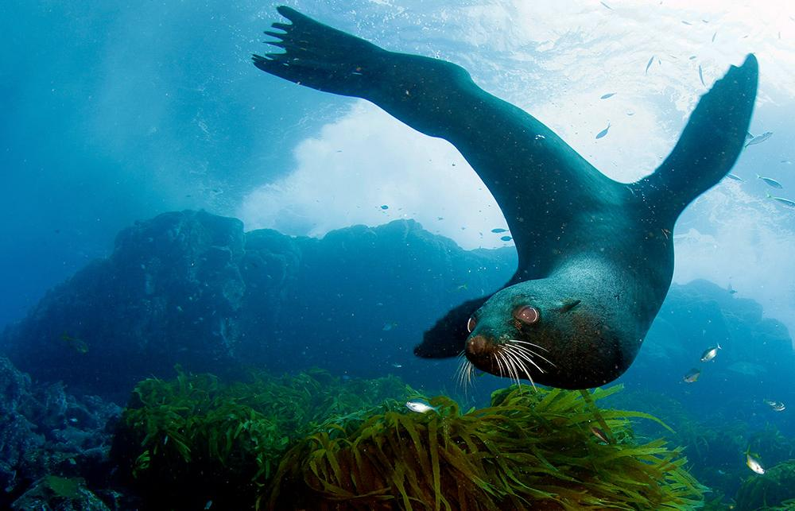
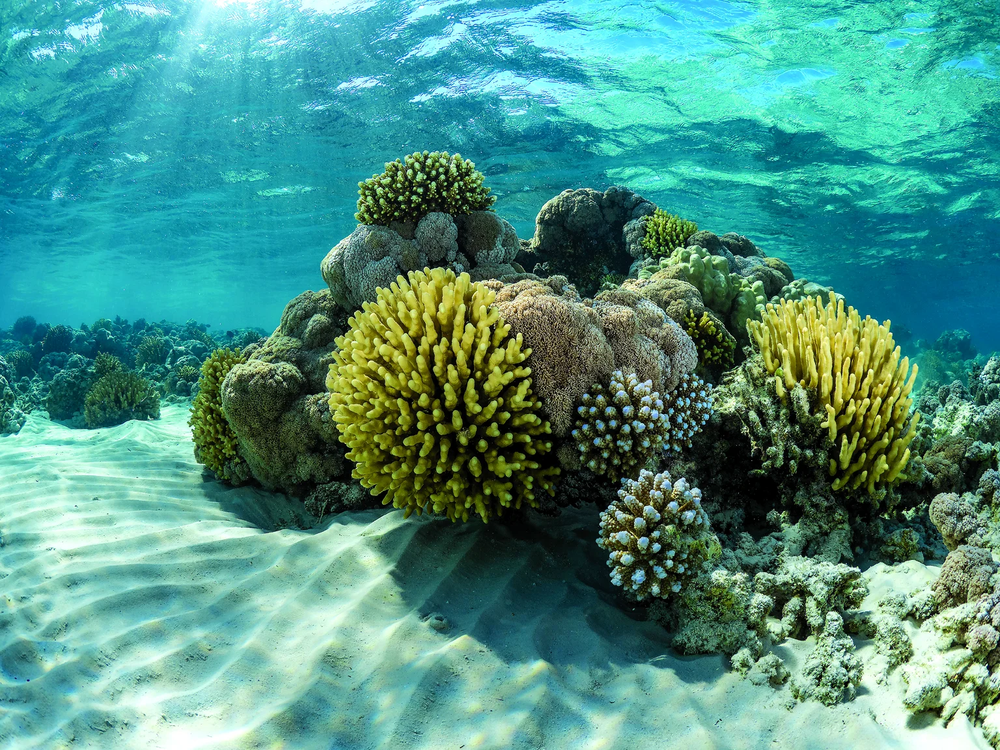
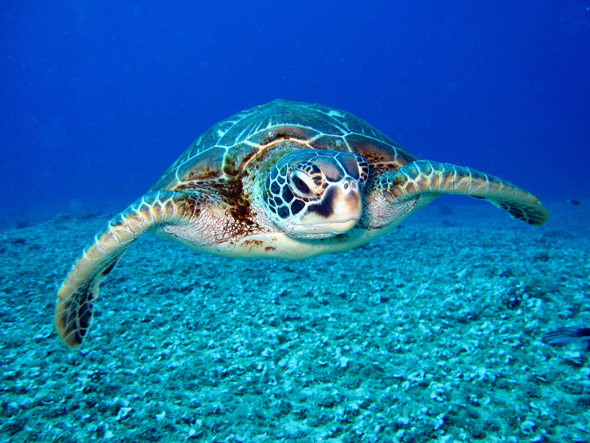
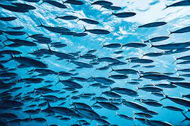
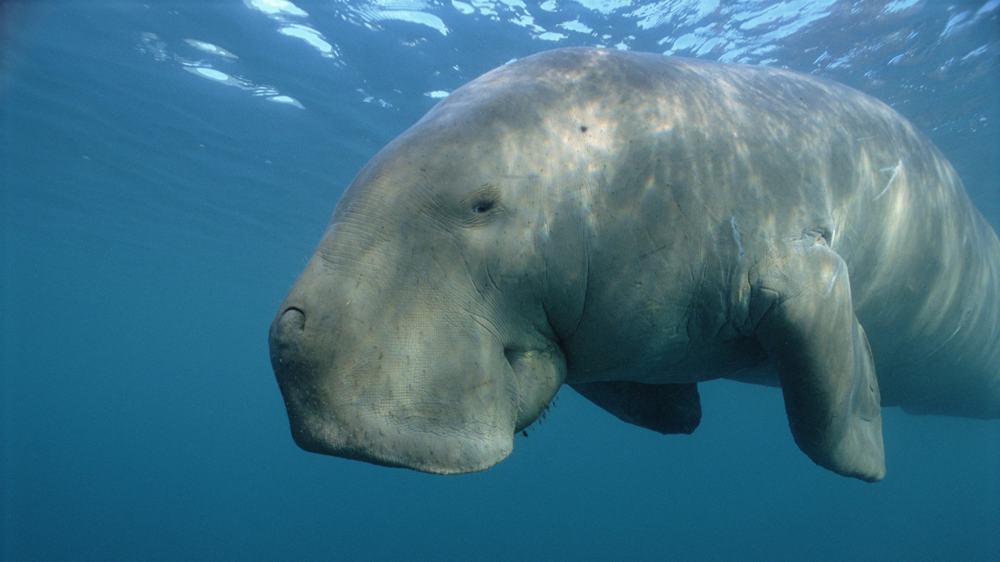

Marine Life
Marine life, sea life, or ocean life is the plants, animals and other organisms that live in the salt water of seas or oceans, or the brackish water of coastal estuaries. At a fundamental level, marine life affects the nature of the planet. Marine organisms, mostly microorganisms, produce oxygen and sequester carbon.Marine life in part shape and protect shorelines, and some marine organisms even help create new land (e.g. coral building reefs).
Sea Creatures
Most life forms evolved initially in marine habitats. By volume, oceans provide about 90% of the living space on the planet. The earliest vertebrates appeared in the form of fish, which live exclusively in water. Some of these evolved into amphibians, which spend portions of their lives in water and portions on land. One group of amphibians evolved into reptiles and mammals and a few subsets of each returned to the ocean as sea snakes, sea turtles, seals, manatees, and whales. Plant forms such as kelp and other algae grow in the water and are the basis for some underwater ecosystems. Plankton forms the general foundation of the ocean food chain, particularly phytoplankton which are key primary producers.





Endangered Animals
| Animal | Classification | Image |
|---|---|---|
| Sea Turtle | Endangered |  |
| Dugong | Vulnerable |  |
| Hawksbill Turtle | Critcally Endangered |  |
| Blue Whale | Endangered |